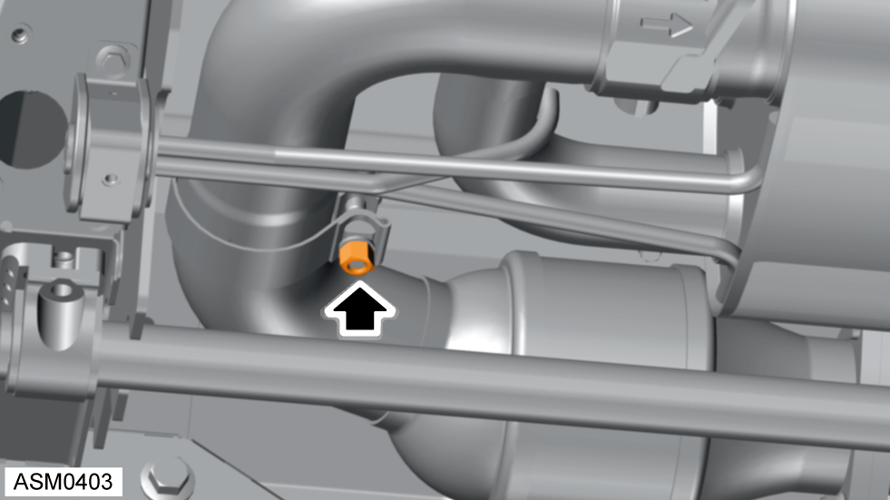
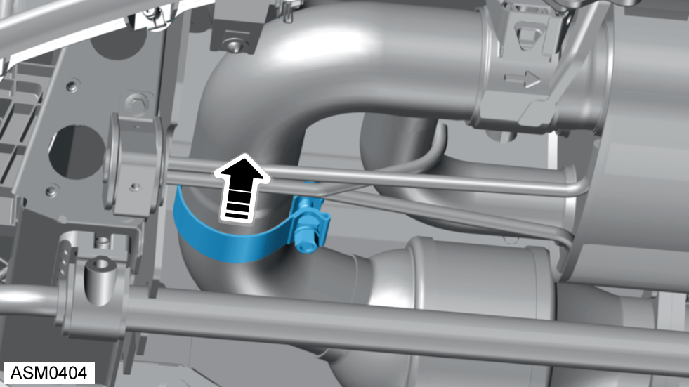
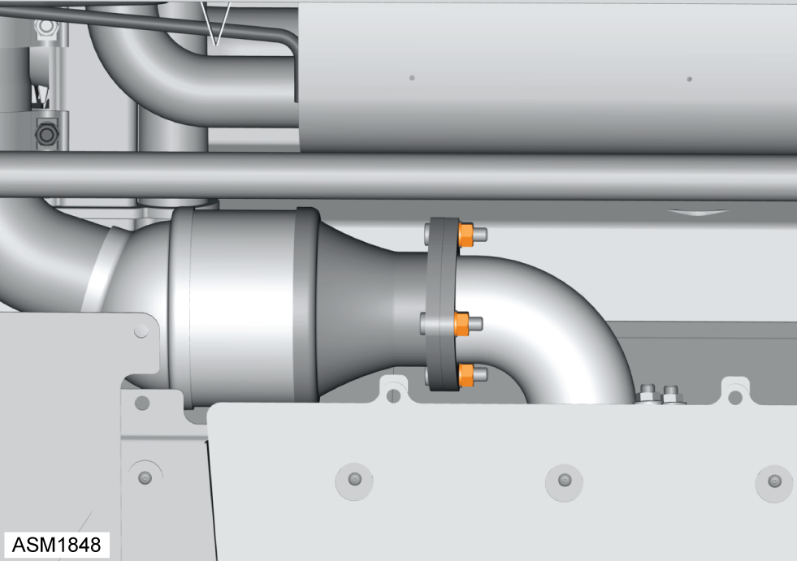
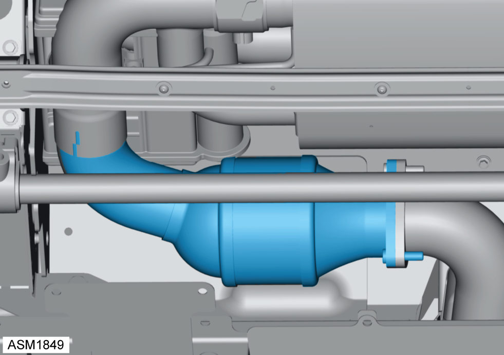
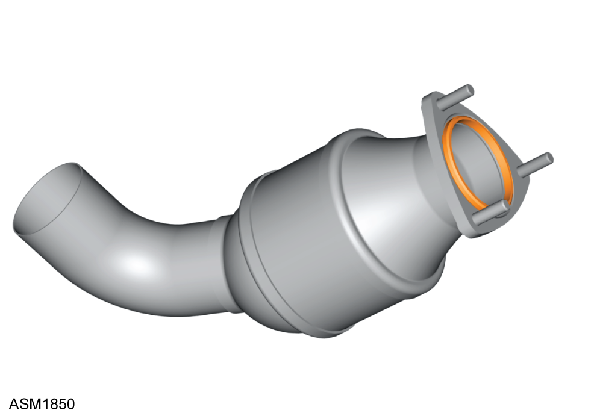

Catalytic Converter - V6
Print
Operation Code: 45.01.11-02
Removal
- Remove rear diffuser. Refer to procedure.
 WARNING: Allow the engine to cool completely before proceeding.
WARNING: Allow the engine to cool completely before proceeding.

- Loosen clamp securing silencer assembly to catalyst. Torque 60 Nm.

- Move clamp on to silencer assembly.

- Remove nuts (x3) securing downpipe to catalytic converter. Torque 55 Nm.

- Remove catalytic converter.

- Remove and discard exhaust O-ring gasket.
Installation
- Installation is the reverse of removal procedure except for the following:
- Renew exhaust O-ring gasket.